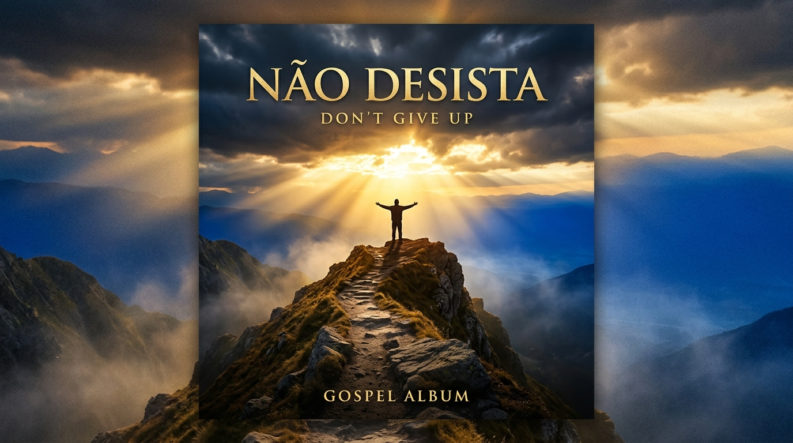

Louvor em destaque
Não Desista
Cantora Ludmila Ferber
Uma mensagem de fé e esperança para encorajar o seu coração. Não desista — Deus ainda está trabalhando em sua história.
Mais louvores
Mais uma mensagem para renovar a sua fé e adorar a Deus.
Sobre o Altos Louvores
O Altos Louvores é um espaço dedicado a reunir vídeos com temas gospel que edificam, confortam e aproximam você de Deus. Aqui você encontra mensagens, louvores e testemunhos para alimentar a sua fé todos os dias.
Mensagens que tocam
Conteúdo cuidadosamente selecionado para fortalecer a sua caminhada.
Louvores & adoração
Cânticos que elevam o seu espírito e aproximam o seu coração de Deus.
Sempre disponível
Acesse de qualquer lugar, a qualquer hora — no celular ou no computador.
“Tudo posso naquele que me fortalece.”
— Filipenses 4:13